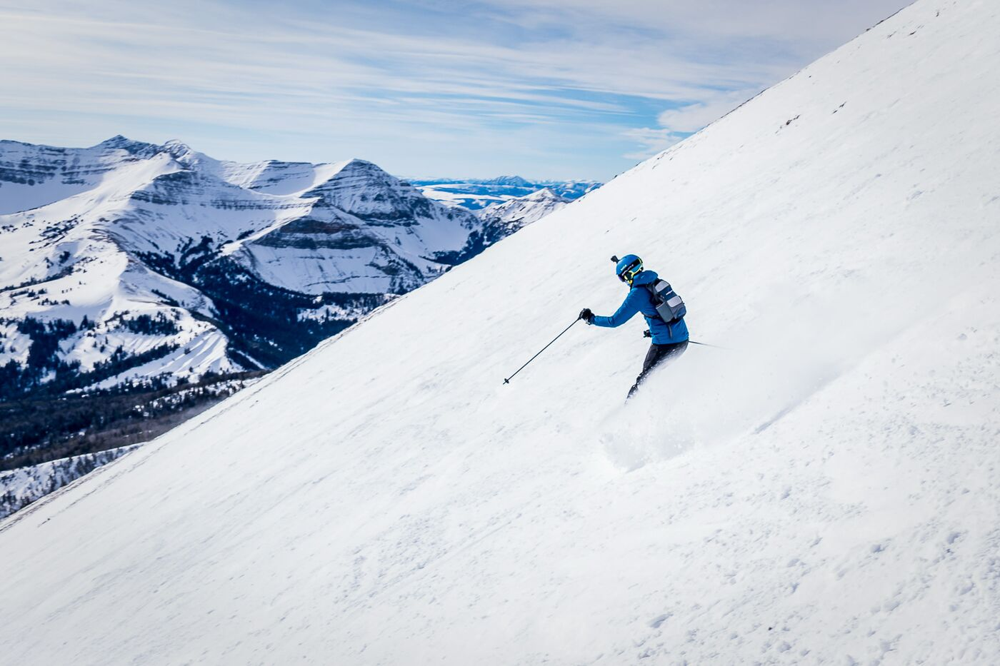
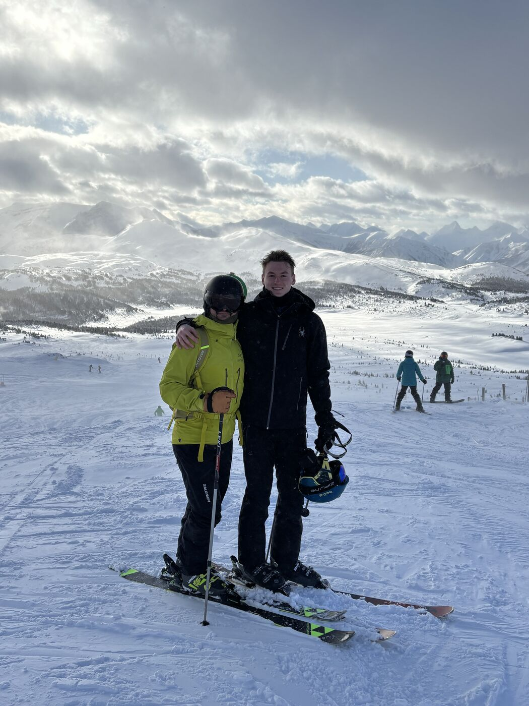
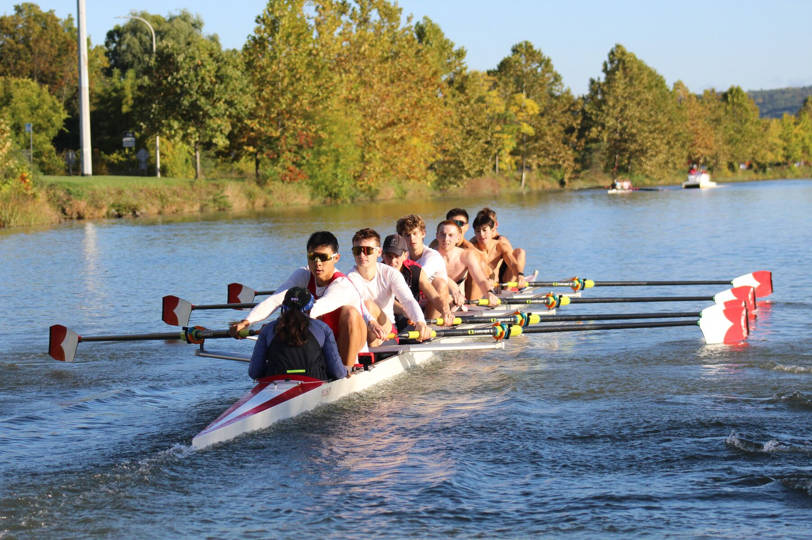

Aerodynamics, composites, and hardware built to go fast.
I'm Max, a third-year mechanical engineering student and NCAA Division I lightweight rower. I design parts in CAD, test them with CFD and on the shop floor, and write the Python that tells me which version is actually better.

Engineering for performance, one iteration at a time.
I'm a B.S. Mechanical Engineering student at Cornell (expected May 2028). Most of my work sits where aerodynamics, lightweight structures, and manufacturing meet. This past summer at Princeton Carbon Works I ran parametric CFD sweeps on carbon triathlon wheel rims, made GD&T drawings for a carbon frame, and wrote tools that turned messy data into decisions.
On campus I'm on the mold sub-team of Cornell Concrete Canoe, where we build a 20-ft canoe from scratch every year. Last season we hot-wire cut our own foam mold in-house for the first time. I also row for Cornell Lightweight Crew, which means 20+ hours of training a week alongside a full engineering course load. Rowing taught me that a small, repeatable improvement compounds, and I bring that habit to engineering.
How do you make something faster, lighter, and still easy to build?
Outside the lab
Ultramarathons and triathlons, backpacking, chess, drumming, and DJing. I speak English, Romanian, and French.
Simulation & Analysis
External-flow CFD (NablaFlow AeroCloud, ANSYS Fluent), yaw-weighted drag analysis, and hand calcs to check the solver.
Design & CAD
Parametric modeling in SolidWorks and Fusion 360, manufacturing drawings with GD&T, and reverse engineering from calipers.
Fabrication
Foam mold building and hot-wire cutting, carbon-fiber layup, 3D printing, and assembling and testing prototypes.
Data & Code
Python (NumPy, pandas, Matplotlib), MATLAB, and Excel. I build small tools that take a manual review out of someone's week.




Projects
Internship, project-team, and personal work. Each card opens a short case study covering the problem, the approach, and what I learned.

Parametric Rim Aerodynamics
I defined 75 and 95 mm triathlon rim profiles with four geometric parameters, ran full yaw-range CFD on every candidate, and weighted drag by how long riders actually spend at each yaw angle. Max rim width came out as the parameter that matters most.
Read case study →
ARGO: In-House Hot-Wire Foam Mold
A 21-ft tumblehome canoe mold cut in-house from laser-cut templates, with a demoldable "Core Four" center section.
Read case study →
GD&T Frame Drawings & Hanger Replicas
Manufacturing drawings for a carbon frame, plus caliper-measured Shimano and SRAM UDH hanger replicas that I 3D printed and fit to a prototype.
Read case study →Modular Time-Trial Aerobar Stack
I replaced one-off 3D-printed metal stacks with universal CNC-able spacers that can be reconfigured to fit any rider.
Read case study →BOM Shortage Tool
A Python and Excel tool that reads live BOM data, flags builds that are short on parts, and routes each shortfall to one of two contract factories.
Read case study →In progress
Updated Oct 2026 In progress
In progressHull CFD & a Reusable Mold
Running hull CFD in ANSYS Fluent to compare revisions of this year's 20-ft hull, and reworking the foam mold so one mold survives several pours.
See current status →Ultralight Bike Travel Case
A contoured carbon/foam sandwich shell aiming for roughly half the weight of the lightest case on the market.
See plan →BrokePart
A phone app that identifies a broken or missing part from a photo, then walks you through a fix, finds a replacement, or produces a printable CAD part.
See plan →Also worth a look
Micro-Roughness Surfaces
A literature review of distributed micro-roughness (DMR) coatings, which reduce drag on streamlined bodies through lower skin friction, as groundwork for future wheel surfaces.
AI Research & Evaluation
I write multi-step research questions with a sourced path behind each answer, and grade model reasoning across text, image, audio, and video.
Cornell Lightweight Crew
NCAA Division I varsity athlete since August 2024, in a nationally ranked program. Rowing is where I learned to train hard and to measure everything.
| Season | Regatta | Result |
|---|---|---|
| Fall | Princeton Chase | Course record: rowed in the crew that set the all-time record |
| Fall | Head of the Charles | Medal crew |
| Spring | Add regatta (e.g. EARC Sprints / IRA) | Add boat and result |
| — | Add regatta | Add boat and result |




Resume
The highlights are below. The full one-page PDF is always current.
-
Jun – Aug 2026
Engineering Intern
Princeton Carbon Works · Mystic, CTRim aerodynamics with parametric CAD and yaw-weighted CFD. GD&T frame drawings. UDH hanger replicas. A BOM shortage tool.
-
Sep 2025 – Present
Mold Sub-Team Engineer
Cornell Concrete Canoe Project Team · Ithaca, NYHull and mold geometry in Fusion 360. Hull CFD in ANSYS Fluent. A foam mold process that holds up over multiple pours.
-
Oct 2025 – Present
AI Research & Evaluation Specialist
Handshake AI · RemoteSearch-dependent research questions with independent sourcing. Multimodal grading of model responses.
-
Aug 2024 – Present
NCAA Division I Varsity Athlete
Cornell Lightweight Crew · Ithaca, NY20+ hours a week in a nationally ranked program. Rowed in the Princeton Chase course-record crew.
-
Summers 2024 & 2025
Head Counselor
Pelham Country Club · Pelham, NYRan daily operations for a 50+ member camp and supervised junior staff.
-
May – Aug 2023
Operations & Logistics Intern
BuddhaBooth · Mount Vernon, NYAssembled and bench-tested portable booth units for 200+ school customers.
Let's build something fast.
I'm looking for engineering internships in aerodynamics, composites, and performance hardware for Summer 2027. The quickest way to reach me is email.